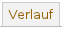
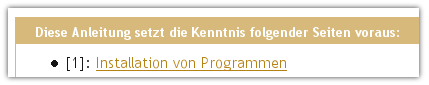
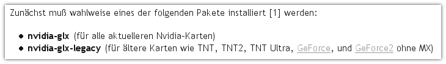
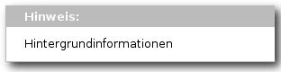
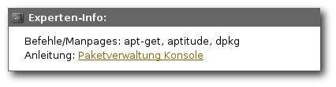

Referenz
Dieser Artikel gibt einen Überblick über die grundsätzlichen Regeln, die man bei der Arbeit im Wiki beachten sollte. Wir bitten darum, diese vor dem Bearbeiten oder Erstellen einer Seite durchzulesen und zu verinnerlichen. Weiterhin werden hier teilweise Beispiele aufgezeigt, wie man spezielle Dinge im Wiki umsetzt.
Wir haben sehr strikte Anforderungen formuliert, damit die Artikel verständlich, leicht zu lesen und leicht zu warten sind. Niemand hat bisher auf Anhieb einen perfekten Artikel geschaffen. Natürlich helfen wir neuen Autoren gerne bei der Korrektur und Verfeinerung ihrer Artikel. So wichtig unsere Anforderungen für die Qualität des Wiki sind - sie sollen niemand von der Mitarbeit abhalten.
Allgemeines¶
Das Wiki ist eine Sammlung von Artikeln, die jeder bearbeiten kann. In manchen Fällen ist eine Bearbeitung nicht erlaubt, weil die Seite ein von uns reguliertes Aussehen hat oder bestimmte Informationen enthält (siehe z.B. bei der Startseite).
Anspruch¶
Im Wiki gelten andere, höhere Ansprüche als in einem Forum oder im IRC. Problembeschreibungen und Lösungswege müssen stets nachvollziehbar und korrekt sein, diffuse Hinweise wie "probier doch auch mal das hier, das hat bei mir geholfen" sind eher kontraproduktiv. Die Beachtung einiger formaler Grundsätze soll Lesbarkeit, Verständlichkeit, Rechtschreibung und nicht zuletzt Einbindung im "großen Ganzen" gewährleisten.
Hinweis:
Um schwer lesbare Satzgebilde zu vermeiden, verwendet dieses Wiki die männliche Form: Benutzer statt "Benutzerinnen und Benutzer", Spieler statt "Spielerinnen und Spieler".
Problematische Themen und Artikel¶
Folgende Artikel werden nicht ins Wiki von Ubuntuusers aufgenommen:
| Problematische Themen und Artikel | ||
| Thema | Warum es nicht gewünscht wird | Wo man sein Wissen dennoch unterbringen kann |
| Programme, die lediglich unter Wine zu installieren sind und dann problemlos laufen. | Dieses Wiki ist ein Ubuntu/Linux-Wiki und sollte entsprechende Software aufführen. Ausnahmen bilden Programme, bei denen bei der Installation einige Dinge zu beachten sind und zu denen es keine Alternativen im Ubuntu/Linux-Bereich gibt. | In diesem Fall ist es besser, man engagiert sich in der Applikations-Datenbank  von Wine. von Wine. |
| Notebook-/Netbookartikel | Die Hardware bei diesen Geräten ändert sich sehr schnell und somit wären Wikiartikel sehr schnell veraltet. | Bei Problemen mit bestimmten Notebooks, kann man Problemlösungen im Artikel Notebooks festhalten. Analog gilt dies für Netbooks |
| Inoffizielle Derivate | Das Wiki von Ubuntuusers ist ausschließlich für offizielle Derivate gedacht. | Wer zu einem inoffiziellen Derivat etwas schreiben möchte, kann dies im Artikel Alte Hardware/Ubuntu vermerken. |
Änderungen und Konflikte¶
Nicht immer sind alle Autoren einer Meinung. Das Wiki ist aber ein denkbar schlechtes Medium für Diskussionen. ubuntuusers hat ein Forum und dieses sollte für Diskussionen stets benutzt werden. Aus dem Wikiartikel kann man dann mit Hilfe des Menüpunkts "Diskussion" zur entsprechenden Diskussion springen oder, falls diese noch nicht existiert, die Diskussion starten.
Die Liste der Änderungen eines Artikels (Versionen) unter "Verlauf"  führt auch die jeweiligen Autoren auf. Im Einzelfall kann es sinnvoll sein, einen Autor direkt anzusprechen, beispielsweise per Privatnachricht.
Regeln für Wikiartikel¶
Jeder Autor sollte versuchen, die folgenden Regeln zu beherzigen. Nur so kann man ein Wiki mit durchgehend hohem Qualitätsstandard erreichen bzw. halten.
Konzeption¶
Am Anfang eines guten Artikels steht die Planung. Ist bereits ganz klar, was genau der Artikel behandeln soll und in welcher Weise das geschehen soll?
Thema¶
Wikiartikel sollen bevorzugt Themen behandeln, die spezifisch für Ubuntu und seine Derivate sind.
Es gibt viele hervorragende spezialisierte Wikis im Netz. So schön ein wachsendes ubuntuusers-Wiki auch ist – manche Themen sind anderswo besser aufgehoben. Dies gilt für Themen, die nicht für Ubuntu spezifisch sind, sondern beispielsweise auf Linux im Allgemeinen oder Spielen unter Wine anwendbar sind, wenn an anderer Stelle im Netz bereits eine deutschsprachige Seite hoher Qualität besteht.
Gute Wikis mit allgemeinen oder speziellen Themen findet man im WikiIndex
Beschränkung auf das Kernthema¶
Jeder Artikel sollte nur ein Thema behandeln, das aber dafür gut und möglichst vollständig.
Zur Erklärung soll ein Beispiel dienen: In vielen Artikeln wird an irgendeinem Punkt Software installiert. Würde man diese Softwareinstallation nun im Artikel selbst erklären, wäre dieser entweder schrecklich lang oder die Erklärung stark verkürzt. Die Installation von Paketen wird deshalb besser in einem eigenen Artikel behandelt. Dieser Artikel existiert natürlich längst. Aber auch wenn zu einem Teilaspekt des geplanten Artikels noch keine eigene Anleitung vorhanden ist, sollte man über eine Aufteilung nachdenken. Faustregel: Wenn es denkbar ist, dass der fragliche Teilaspekt auch für andere Artikel relevant sein könnte, sollte man ihn auslagern.
Benennung¶
Die endgültigen Seitennamen werden vom Wikiteam festgelegt, wenn die Seite aus der Baustelle (siehe unten) verschoben wird. Dennoch sollte man auch dort schon keine überlangen und komplizierten Namen verwenden. Siehe hierzu auch den Anhang.
Erstellung¶
Neue Wiki-Artikel werden grundsätzlich über die Seite Wikiartikel anlegen erstellt. Der neue Artikel liegt dann in der „Baustelle”. Dies stellt sicher, dass die Benutzer und speziell die Wiki-Moderatoren vor dem Freischalten drüber schauen können.
Grundstruktur¶
Grundsätzlich sollte jeder Wikiartilkel aus mindestens vier Abschnitten bestehen:
Einleitung: hier wird das Kernthema bzw. das Programm beschrieben.
Installation: hier wird beschrieben, wie das Programm installiert werden kann. Dieser Teil ist immer obligatorisch, auch für Programme, die bei einer Ubuntu-Installation immer automatisch mit installiert werden.
Benutzung: hier wird die Nutzung des Programms beschrieben.
Links: hier werden weiterführende Links aufgeführt, z.B. auf weitere Dokumentation oder Artikel zum Programm in anderen Wikis oder Blogs.
Wird im Abschnitt "Installation" die manuelle Installation beschrieben, dann ist auch ein Abschnitt "Deinstallation" Pflicht, in dem Beschrieben wird, die man die manuell installierten Dateien wieder vollständig entfernt.
Je nach Umfang des Themas können die Abschnitte, im Besonderen der Abschnitt "Benutzung", weiter unterteilt werden. Außerdem können, wenn nötig, noch weitere Abschnitte eingefügt werden, z.B. zu "Probleme und Lösung" oder "Konfiguration".
Bestehende Artikel überarbeiten¶
Möchte man einen bereits bestehenden Artikel im größeren Umfang überarbeiten, wendet man sich mit seinem Anliegen an das Forum Rund ums Wiki. Ein Wiki-Moderator wird dann den Artikel in die Baustelle verschieben und durch eine Kopie ersetzen. Dies sichert die Kontinuität in der Versionsgeschichte des Artikels. Das weitere Vorgehen unterscheidet sich nicht von der Handhabung mit neuen Artikeln.
Kleinere Änderungen, also solche, die schnell gemacht sind, z.B. mit einer Editierung, können direkt im Wiki gemacht werden.
Hinweis:
Wichtig ist, dass ein Artikel im Wiki nie im unfertigen oder gar falschen Zustand zurückgelassen wird! Sollte so etwas doch einmal passieren, bitte sofort ein Posting im Wiki-Forum erstellen, dann kann ein Wiki Moderator eine alte, korrekte Revision wiederherstellen.
Artikel freischalten¶
Nach der Fertigstellung sollte der Artikel im Wiki-Forum einem größeren Personenkreis bekannt gemacht werden. Benachrichtigungen an einzelne Mitglieder des Wikiteams sind dagegen überflüssig - wir verfolgen ohnehin alle Änderungen im Wiki. Durch den neuen Foreneintrag können nicht nur die Wiki-Moderatoren, sondern auch andere Forenteilnehmer leichter Tipps geben, was zur Vervollständigung des Artikels gegebenenfalls noch fehlt.
Ist der Artikel fertig, d.h. ist der Artikel wiki-konform (erfüllt also die Wiki-Regeln) und es sind keine weiteren Fehler darin, wird er vom Wikiteam bei der nächsten Gelegenheit verschoben.
Verfahren bei verlassenen Baustellen¶
Leider kommt es immer wieder vor, dass ein Artikel voller Elan angefangen wird, dann aber in Vergessenheit gerät. In einem solchen Falle wird der Ursprungsautor vom Wikiteam angeschrieben und im Diskussionsthread eine Notiz dazu hinterlegt. Wenn innerhalb einer Zeitspanne von 3 Monaten keine Reaktion/Bearbeitung erfolgt, wird die Baustelle gelöscht, oder, wenn erhaltenswerter Inhalt besteht, auf "verlassen" gesetzt, so dass jeder Interessierte sie dann ohne Rückfragen weiterbearbeiten kann.
Niveau¶
Allgemein gilt: Versuche möglichst kurze, eindeutige Sätze zu schreiben. Die Aussagen sollen anderen helfen und klar verständlich sein. Umschreibungen verwirren oft den eigentlichen Sinn eines Artikels.
Verständlichkeit¶
Anleitungen sollten für jeden verständlich sein, der die Einsteiger-Sektion und die im Wissensblock angegebenen Grundlagenartikel gelesen hat.
Ausnahmen sind möglich, wenn der Inhalt der Anleitung eindeutig ausschließlich für Spezialisten von Interesse ist. In diesem Fall ist am Beginn der Anleitung ein Hinweis auf die Zielgruppe und die vorausgesetzten Kenntnisse anzugeben und ggf. die Fortgeschritten-Box zu benutzen.
Inhalt¶
Die Artikel sind mit Inhalt zu füllen. Es genügt nicht zu beschreiben, wie z.B. ein bestimmtes Programm installiert wird. Es sollte auf jeden Fall auf einfache Art und Weise beschrieben werden: Was kann es? Wofür ist es gut? Wie funktioniert es? Wie richte ich es ein? Grundwissen bildet die Basis des Artikels.
Umgangssprache¶
Auf umgangssprachliche Ausdrücke sollte verzichtet werden.
Fachbegriffe¶
Sind deutsche Fachbegriffe gebräuchlich, so sollten diese verwendet werden.
Unsinnige Eindeutschungen sollte man natürlich vermeiden. Im Zweifelsfall gibt die Übersetzung von Ubuntu selbst einen guten Anhaltspunkt - wenn hier beispielsweise von "einbinden" die Rede ist, sollte man im Wiki nicht von "mounten" sprechen. Eine Liste mit falscher und korrekter Verwendung findet man hier: Wiki/Begriffe. Wörter, die auf Fachbegriffe hinweisen oder diese betonen sollen, sind zu vermeiden.
Wahl der Werkzeuge¶
Der Leser soll in der Wahl seiner Werkzeuge nicht unnötig festgelegt werden.
Werkzeuge: das sind Texteditoren, Paketmanagementwerkzeuge, Benutzeroberflächen. Der eine Anwender liebt den Paketmanager aptitude, der andere fürchtet sich vor der Kommandozeile und installiert Programme am liebsten mit "Ubuntu Software Center" im GNOME-Menü, der dritte nutzt KDE und hat diese Möglichkeit zunächst einmal gar nicht, kann dafür aber Adept verwenden.
Alle diese Anwender wollen lediglich ein Paket installieren und nicht irgendein Programm benutzen, das dem Autor einer Anleitung gerade in den Sinn kam. Daher müssen Anleitungen möglichst allgemein gehalten werden. Wenn ein Paket installiert werden muss, sieht das so aus:
Oben im Wissensblock wird ein Link auf den passenden Artikel platziert, 
in der Anleitung selbst genügt jetzt eine allgemeine Formulierung. 
Die Grundlagenartikel enthalten außerdem Abschnitte für GNOME- und KDE-Nutzer. Unabhängigkeit von der verwendeten Oberfläche sollte in jeder Anleitung angestrebt werden.
GUI vs. Konsole¶
Wenn vorhanden, sollen GUI-Werkzeuge an erster Stelle beschrieben werden.
Einfachheit ist subjektiv. Könner lieben die Kommandozeile wegen ihrer Effizienz und Logik, aber für Einsteiger ist sie weder schnell noch einleuchtend. Daher sind in Wikiartikeln im Zweifelsfall stets GUI-Werkzeuge vorzuziehen. Hinweise auf Shellkommandos oder Konfigurationsdateien gehören dagegen in die "Experten"-Box (s.u.).
Installations-Abschnitt¶
Jeder Artikel - sofern es kein Übersichts- oder Grundlagenartikel ist - soll einen Abschnitt zur Installation des behandelten Programms haben. Die Installation sollte vollständig beschrieben werden, es sollte nicht nur auf eine andere, externe Seite verlinkt werden. Gibt es zusätzlich noch alternative oder weitere Installationsarten, kann hierfür ggf. auf externe Webseiten etc. verwiesen werden.
Pakete vs. Kompilieren¶
Wenn möglich ist die Installation über ein geeignetes Paket dem selber kompilieren vorzuziehen.
Auch hier ist Einfachheit bevorzugt, und das ist unter Ubuntu und dessen moderner Paketverwaltung die Installation von Programmen über fertige Pakete. Gibt es keine fertigen Pakete, so sollte das Selbst-Kompilieren für das Programm beschrieben werden. Gleiches gilt, wenn die Programm-Version in den Paketquellen (stark) veraltet ist oder bekannt Bugs oder fehlende Funktionen hat, die in der neueren Version beseitigt sind.
Ist die Beschreibung für das Kompilieren umfangreicher, z.B. weil zuerst umfangreiche Abhängigkeiten von Hand aufgelöst werden müssen, weil Make-Files angepasst werden müssen, weil der Quellcode erst gepatcht werden muss etc., so ist die Beschreibung des Kompilierens in einen eigenen Unterartikel auszulagern.
Fremdquellen und -pakete¶
Grundsätzlich sollten Fremdquellen oder Fremdpakete vermieden werden.
Wenn es nicht anders geht, muss zwingend entweder die Warnung für Quellen oder Pakete per
[[Vorlage(Fremd, Paket, "Kommentar")]]
bzw.
[[Vorlage(Fremd, Quelle, "Kommentar")]]
angegeben sein. In der Vergangenheit hat sich gezeigt, dass vor allem bei Upgrades (häufig mit Updates verwechselt) fremde Pakete sehr oft für Ärger sorgen.
Allgemeingültigkeit anstreben¶
Nutzer verschiedener Desktopumgebungen (GNOME/KDE/Xfce etc.) und Programme sollten mit dem Artikel gleichermaßen etwas anfangen können. Dies bedeutet: Verwendete Programme sollten entweder in allgemeiner Form erwähnt werden (IRC-Client, Texteditor, Medienplayer, ...) oder es sollte auf Programme für mehrere Oberflächen hingewiesen werden.
Hintergrundinformationen¶
Hintergrundinformationen dürfen nicht ablenken!
Ein guter Teil der Leser will nicht in erster Linie etwas lernen, sondern etwas erreichen: dass es funktioniert. Es ist gut und wichtig, Hintergrundinformationen für alle Interessierten anzubieten, aber sie sollten nicht aufdringlich im Weg stehen und den Lesefluss stören.
Für allgemeine Hinweise, die besonders hervorgehoben werden sollen, gibt es die Hinweis-Box.  Sie soll sparsam verwendet werden.
Für Hintergrundinformationen gibt es die Experten-Box. Die dort enthaltenen Informationen wenden sich an interessierte Leser und Fachleute, sie sind möglichst knapp zu halten. Diese Box wird meist am Ende eines Abschnitts oder Artikels platziert. 
Formulierung¶
Anrede¶
Direkte Anrede ist zu vermeiden.
Nicht "Du", nicht "Sie", sondern "man" ist richtig. Auch ein "wir" oder "ich" ist nicht geeignet!
Inhalt¶
Knapp formulieren. Keine Bekehrungsprosa, sondern Überzeugung durch Inhalt.
Knapp und klar formulierte Artikel sind leichter zu lesen. Niemand will beispielsweise lesen, wie toll und erstaunlich gut ein Programm ist, und wie es zum Brechen des bösen Monopols beiträgt. Wenn der Artikel stattdessen Hinweise auf Fähigkeiten und Schwächen liefert, das Programm dann wie beschrieben seine Aufgabe erfüllt und sich als zuverlässig erweist, ist das die weit bessere Werbung.
Zitate¶
He says someone else has already said it best. So if you can't top it, steal from them and go out strong. (IMDB - American History X Quotes
Zitate kann man sehr gut in Einleitungen benutzen und sollten so aussehen wie oben. Das heißt, den Text mit Hilfe der Syntax als Zitat einfügen und am Ende einen Link (oder zumindest einen Namen) hinzufügen, woher das Zitat stammt.
Natürlich sollen keine ganzen Artikel "zitiert" werden. Ausnahmen sind hierbei Übersetzungen anderssprachiger Anleitungen oder die Umsetzung einer Anleitung für ein anderes Linux-System auf Ubuntu. In diesen beiden Fällen muss die Quelle aber zwingend am Anfang des Artikels genannt werden.
Hinweis:
Das Zitat oben wurde gewählt, weil es etwas über Zitate im Allgemeinen aussagt: Wenn es schon jemand vor dir gut beschrieben hat, dann ist es meist besser von diesem zu zitieren, um sich damit einen guten Eindruck zu verschaffen (sehr frei übersetzt).
Gestaltung¶
Textbausteine¶
Bei der Gestaltung eines Artikels hat man die Möglichkeit, durch Textblöcke bzw. -Kästen auf verschiedene Sachverhalte hinzuweisen. Um sie nicht der Aufmerksamkeit des Lesers entgehen zu lassen, positioniert man allgemeine Hinweise direkt an den Anfang des Artikels. Dazu zählen:
der Getestet-Tag
der Wissensblock
gegebenenfalls auch ein Fortgeschritten-, Ausbaufähig- oder Fehlerhaft-Tag
Der Wissensblock ist neben dem Getestet-Tag ein zentraler Bestandteil des Artikels. Hier sollten die für den Artikel relevanten Grundlagen verlinkt sein. Bei Verwendung der Vorlage/Artikel umfangreich (siehe Wikiartikel anlegen) ist bereits eine Liste mit den meist genutzten Grundlagenartikeln enthalten. Diese Liste sollte für die meisten Artikel absolut ausreichend sein. Je nach Bedarf können auch noch weitere Artikel aufgenommen oder auf Teile verwiesen werden, wenn dies sinnvoll erscheint.
Eine komplette Übersicht mit Erklärung gibt es unter Wiki/Textbausteine. Im Artikel Wiki/Kopiervorlage gibt es viele Textbausteine und Punkte für den Wissensblock zum Kopieren und Einfügen in Wikiartikel.
Abbildungen und Bildschirmfotos¶
Die Ladezeiten dürfen nicht durch riesige Abbildungen unnötig verlängert werden. Eine Anleitung, wie man kleine Bildschirmfotos/Bilder erstellt, findet man im Artikel Bildschirmfotos.
Bilder im Format .png haben bei Bildschirmfotos mit den richtigen Einstellungen eine geringere Dateigröße als Bilder im Format .jpg bei gleicher Qualität. Vor allem aber kommt die Skalierungsfunktion des Wiki wesentlich besser mit indizierten PNG-Bildern zurecht. Soll das Bild im Wiki nicht verkleinert werden, kann man auch ein JPG-Bild benutzen, wenn die Dateigröße geringer ist.
Achtung!
Die Skalierungsfunktion des Wiki für Vorschaubilder sollte nur in Ausnahmefällen für Abbildungen genutzt werden, die sich nicht sinnvoll verkleinern lassen. In dem Fall ist eine hohe Skalierung (meist mehr als 50%) zu wählen, um die Maximalgröße von 30kB zu erreichen. Im Allgemeinen sehen Vorschaubilder mit 150-200 Pixel Breite noch gut aus.
Ausnahmen sind hier Bildschirmfotos von Spielen oder extrem farbreichen Programmen. Hier kann auf JPG zurückgegriffen werden, wobei die Größenbeschränkung hier identisch gilt.
Gibt es für das im Wiki-Artikel beschriebene Programm ein charakteristisches Symbol (Icon), so kann dies zu Beginn des Artikels eingefügt werden. Die Größe des Icons sollte 64x64 Pixel bzw. bei rechteckigen Icons bzw. maximal 64 Pixel für die größere Seite nicht überschreiten. Über Wiki/Icons findet man eine fertige Auswahl mit typischen Linux-/Ubuntu-Icons.
Paketlisten¶
Zu installierende Pakete werden meistens fett gedruckt als Liste (siehe Wiki/Syntax) angegeben, wobei die Sektionen/Komponenten dahinter in Klammern kursiv stehen. Beispielsweise:
paket1 (universe)
paket2
Zur Hilfe für Kommandozeilenbenutzer kann man darunter noch einen speziellen Textbaustein mit der zusätzlichen Angabe der Pakete machen:
[[Vorlage(Pakete, "paket1 paket2")]]
Dies sieht dann so aus:
Paketliste zum Kopieren:
sudo apt-get install paket1 paket2
sudo aptitude install paket1 paket2
Die Verwendung ist freiwillig und optional und das Tag sollte nur an sinnvollen Stellen (nur bei mehr als einem Paket und wo wirklich alles installiert werden soll) eingesetzt werden.
Noch einfacher geht die Angabe der Paketlisten mit dem Textbaustein Paketinstallation. Damit wird die Paketliste dann automatisch formatiert und mit dem Installationsknopf versehen.
Dateianhänge¶
Für allgemeine Dateianhänge (also keine Bilder) gilt eine Beschränkung von 500 KiB pro Anhang. Sollte der Anhang doch größer sein, bitte vorher das Wikiteam kontaktieren. Generell beschränken sich die Dateianhänge auf Bilder und selbstgeschriebene Skripte u.ä. passend zum Artikel. Wichtig: Debian-Pakete (.deb) sind nicht als Anhang erlaubt! Ebenso wenig sind Anhänge erlaubt, die an anderer Stelle zum Herunterladen zur Verfügung stehen, wie z.B. auf der Seite eines Hardwareherstellers Firmwaredateien oder Treiber.
Hervorhebungen¶
Nicht vergessen: Hervorhebungen sollen aufzeigen, was wichtig ist!
Daher sind komplette Textpassagen in Fettdruck nicht sehr hilfreich. Zusätzlich gibt es für bestimmte "Elemente" in einem Wiki-Artikel Syntax-Vorschriften, die eingehalten werden müssen, damit ein gleichmäßiges Bild bei allen Artikeln herrscht. So werden Menüeinträge wie "Aktionen -> Info" sowie sonstige grafischen Elemente wie Checkboxen oder Buttons kursiv und in Anführungszeichen gesetzt. Datei-, Ordner- und Gerätenamen dagegen werden immer fett geschrieben. Ausgenommen sind hier Programmnamen (die ja identische Dateinamen besitzen), da eine durchgehende Fettschrift die Lesbarkeit stören würde. Hervorgehobene Elemente sollten im Textfluss eingebettet sein, d.h. sie sollten nicht separat in einer eigenen Zeile stehen (Ausnahme: Paketlisten).
Unterstreichungen sollten aufgrund der Verwechslungsgefahr mit Hyperlinks möglichst nicht oder nur äußerst sparsam verwendet werden. Ebenfalls überflüssig ist eine inflationäre Verwendung von Ausrufezeichen.
Syntax¶
Die einheitliche Einhaltung der Syntax-Regeln ist äußerst wichtig für die Lesbarkeit des Wiki. Die Syntax und ihre korrekte Verwendung ist unter Wiki/Syntax erläutert.
Anhang¶
Schreibung von zusammengesetzten Hauptwörtern¶
Bei zusammengesetzten Hauptwörtern gibt es immer wieder Probleme bei der Schreibung. Grundsätzlich gilt: Komposita werden im Deutschen groß und zusammengeschrieben. Also 'Computerfachbuch', ggf. auch 'Computer-Fachbuch', aber nicht 'Computer Fachbuch'. Das Zusammenschreiben gilt im Prinzip auch bei zusammengesetzten Fremdwörtern, also z.B. 'Desktoppublishing', ggf. auch 'Desktop-Publishing'. Auch hier wäre 'Desktop Publishing' strenggenommen falsch. Für schlecht übersetzbare Wendungen kann man sich mit Anführungszeichen behelfen, in die der fremdsprachige Terminus gesetzt wird: "desktop publishing", dann vorzugsweise in sprachüblicher Schreibung (hier also klein).
Ausnahmen stellen hier Produktbezeichnungen oder feststehende Namen dar. 'Oracle Java 7' wird als alleine verwendeter Ausdruck nicht gekoppelt. Weitere Ausnahme: Bei englischsprachigen Zusammensetzungen aus Adjektiv und Nomen wird getrennt geschrieben: 'Open Source', 'Electronic Commerce', 'High Fidelity'. Wenn die Betonung auf dem Adjektiv liegt, kann auch zusammengeschrieben werden: 'Hotspot', neben 'Hot Spot'.
Anders sieht es bei zusammengezogenen Wortgruppen aus, diese werden immer mit Bindestrichen durchgekoppelt: 'Do-it-yourself-Programm', nicht 'Do it yourself Programm'. Bindestriche können auch verwendet werden, um unübersichtliche Wörter zu strukturieren: 'Dropdown-Menü' neben 'Dropdownmenü', nicht aber 'Drop Down Menü'. Schreibungen sollten in einem Artikel durchgängig verwendet werden. Es dürfen auch fremdsprachige mit deutschen Wörtern kombiniert werden, es besteht keine festgelegte Regel, dort mit Bindestrichen arbeiten zu müssen.
Durchgekoppelt werden müssen aber Zusammensetzungen mit ansonsten getrennt geschriebenen Wendungen: 'Open-Source-Lizenz', 'Java-7-Anwendung'.
Regeln zur Verwendung des Bindestrichs
 auf duden.de
auf duden.deRegeln zur Schreibung von Fremdwörtern
auf duden.de
Benennungsregeln¶
Seitennamen sollten kurz und sprechend sein. Mit Blick auf mögliche Erweiterungen des Artikels dürfen sie keine Einschränkungen wie "installieren" oder "mit Hardy" enthalten. Im Einzelnen:
Seitennamen sollten lediglich aus der Bezeichnung der Software, Hardware oder des Themas bestehen, also normalerweise aus nur einem Wort, wenn möglich ein Nomen, möglichst im Singular.
Es sind bei der Namensgebung nur die folgenden Zeichen erlaubt:
a-z, A-Z, 0-9, _, - , ä, ö, ü, ß, Ä, ÜundÖ.
Eigennamen bleiben (auch bei Seitennamen) einschließlich Leerzeichen und Groß-/Kleinschreibung erhalten. Bei Hardware soll der Hersteller vorangestellt werden, abgetrennt durch ein Leerzeichen.
Ansonsten beginnen Seitennamen mit einem Großbuchstaben.
Zusätze wie "installieren" oder "Konfiguration" sollen nicht verwendet werden. Diese Vorgänge sollen gemeinsam auf der Seite der Software/Hardware behandelt werden, bei wachsendem Umfang können Teile in Subseiten ausgelagert werden, für die wieder ein Nomen als Name dienen sollte.
Ausnahme 1: Seiten, die sich allgemein und ausschließlich mit einem bestimmten Vorgang befassen, ohne dessen Angabe der Titel nicht aussagekräftig ist. In diesem Fall sollte wenn möglich der Vorgang durch ein nachgestelltes Verb beschrieben werden. Ein präzisierender Zusatz kann verwendet werden, aber nur wenn es unbedingt nötig ist.
Ausnahme 2: Übersichtsseiten können Titel wie "Internet und Netzwerk" tragen, wenn es inhaltlich sinnvoll ist. Ansonsten gelten auch hier die obigen Regeln.
Wenn eine Anleitung aus Gründen der Übersichtlichkeit aufgeteilt wird, müssen dafür Subseiten verwendet werden. Zu anderen Zwecken, wie beispielsweise zur thematischen Einordnung, dürfen Subseiten nicht verwendet werden. Hierzu dienen Kategorien, die auch eine Mehrfachzuordnung erlauben.
Beispiele¶
Falsch: iPod verwenden
Richtig: iPod
Erklärung: Dass man den iPod verwenden will, ist irgendwie klar.
Falsch: Scribus installieren
Richtig: Scribus
Erklärung: Normalerweise will man Programme installieren. Das wäre teilweise richtig, wenn "Scribus" selbst mehrere Themen enthält und zu umfangreich geworden ist. Dann wird es aber in einer Subseite Scribus/Installation gegliedert.
Falsch: Zusätzliche Schriftarten installieren
Richtig: Schriftarten
Erklärung: Auch hier könnte später gegebenenfalls aufgeteilt werden.
Ausnahmen: Pakete installieren (Grundlagenartikel), Installation_auf_USB (präzisierender Zusatz)
- Erstellt mit Inyoka
-
 2004 – 2017 ubuntuusers.de • Einige Rechte vorbehalten
2004 – 2017 ubuntuusers.de • Einige Rechte vorbehalten
Lizenz • Kontakt • Datenschutz • Impressum • Serverstatus -
Serverhousing gespendet von